| 日付 | 2015年8月8日（土） - 2015年8月11日（火） | ||||||
|---|---|---|---|---|---|---|---|
| 山域 | 八ヶ岳、中央アルプス、近畿の山 | ||||||
| メンバー | 家族（妻、長女・4歳、長男・2歳） | ||||||
| 山行形態 | 子連れ3泊4日ホテル泊 | ||||||
| アクセス | 車、ロープウェイ | ||||||
| ルート |
|
3日目
早朝5時、菅の台バスセンターはすでに大勢の人が列を作っている。
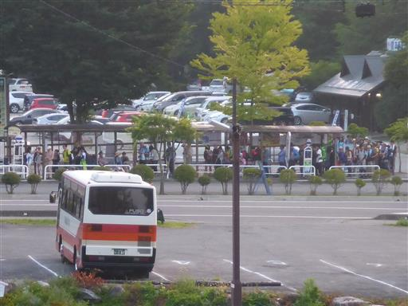
6時ごろ子供たちが目を覚ます。朝食まで時間があるため、駒ヶ池まで散歩する。
遥か遠く、昨日訪れた千畳敷カールが見えている。
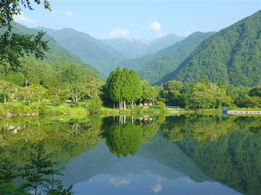
宝剣岳が目立つ。今日は昨日以上に良く晴れている。
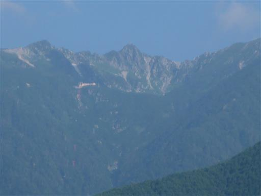
朝食をとったら宿を出発。少々高かったが、親切で良い宿だった。
先ほど駒ヶ池まで散歩したときに発見したアスレチックに行く。
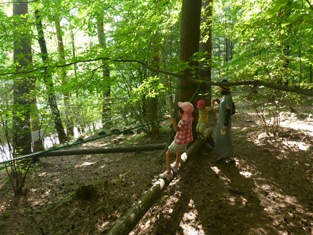
案内にはたくさんの遊具があるように書かれているが、探しても見つからない。
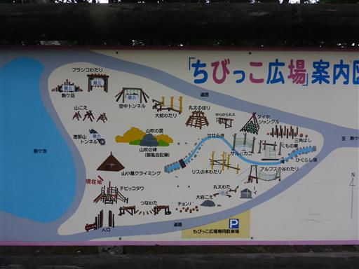
辺りは草に覆われていて、あまり整備されていないようだ。
遊べる遊具は2つくらいだった。
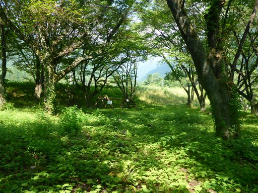
藤棚も整備されず生い茂っている。
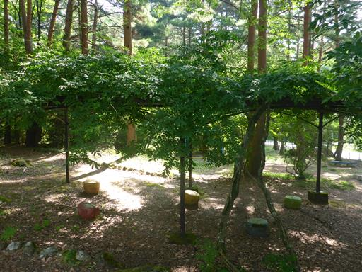
駒ヶ池を見ると、山はもう雲に覆われている。
早朝は晴れていたのに、山の天気は分からない。
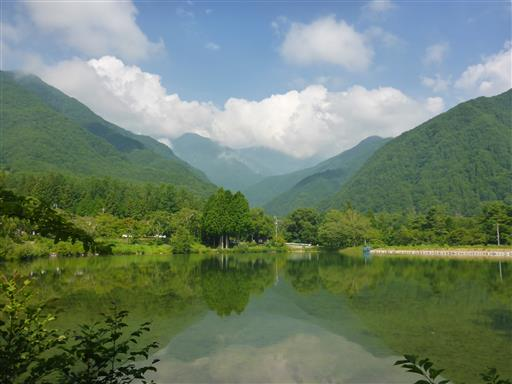
今日は天竜峡で遊ぶ予定だ。姑射橋の側に車を停める。
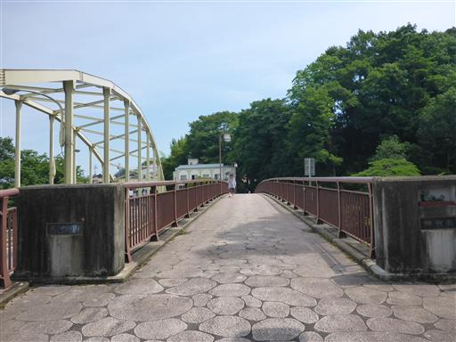
橋からは天竜峡の眺めが良い。緑色の水と白い岩が美しい。
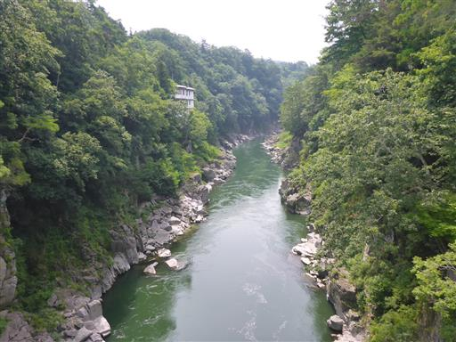
姑射橋を起点とする天龍峡遊歩道が整備されている。
1周1時間ほどなので、軽く歩いてみる。
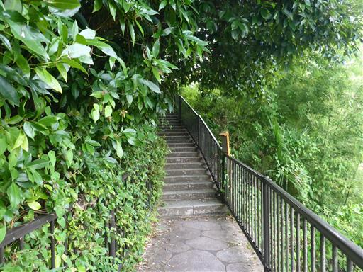
眼下に船が見える。天竜峡ライン下りの船だ。
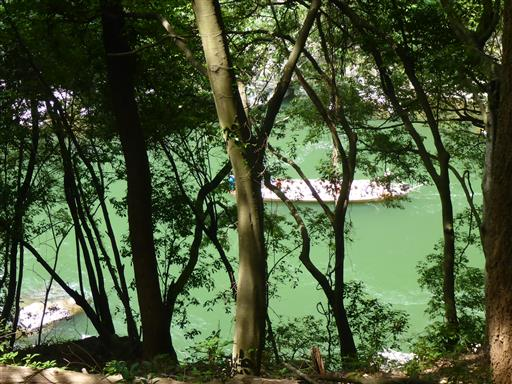
道は結構アップダウンがある。ものすごく暑いため、すぐに汗だくになる。
東屋で休憩をとる。
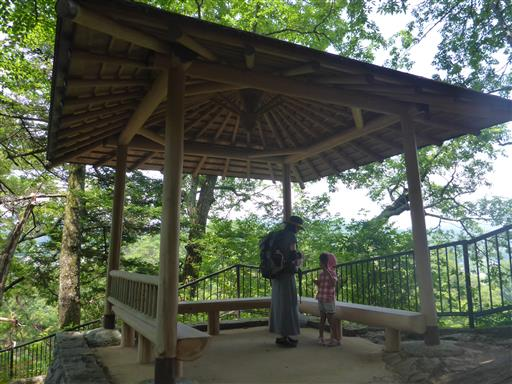
結構階段を登ったので、ここからは眺望が開ける。
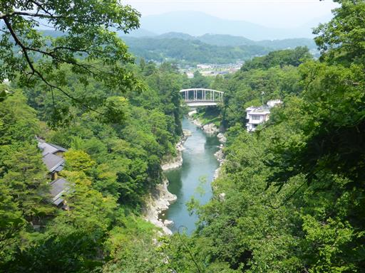
眼下に吊橋が見えてきた。つつじ橋だ。
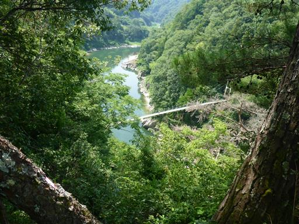
吊橋で対岸に渡る。眼下の白い岩が美しい。
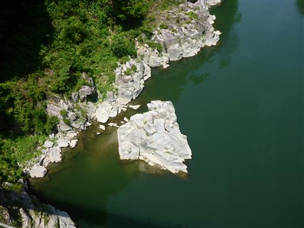
龍角峯。天高く聳える立派な岩だ。
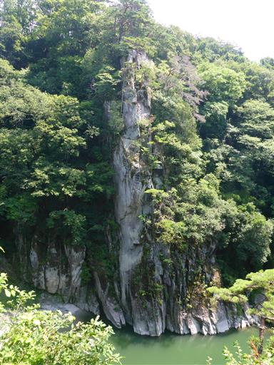
遊歩道にはスタンプ台があって、これまでパンフレットに4つのスタンプを押して歩いてきた。
脇道の階段を登った先に5つ目のスタンプ台があり、疲れてグズついている娘に
「飛ばして行くよ」と言うと、何と「行きたい」と言う。スタンプのためなら歩けるのか…
3分ほど階段を登った先の天竜峡碑の側に、最後のスタンプ台がある。
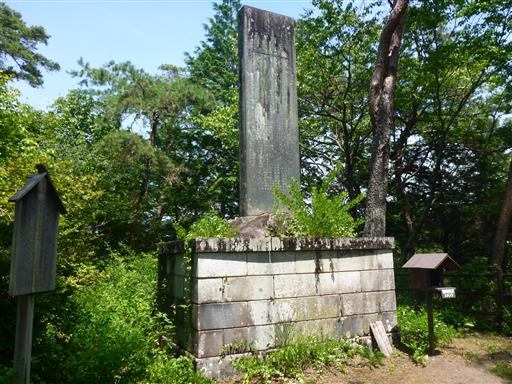
道中にあった「萩」という店で昼食をとる。
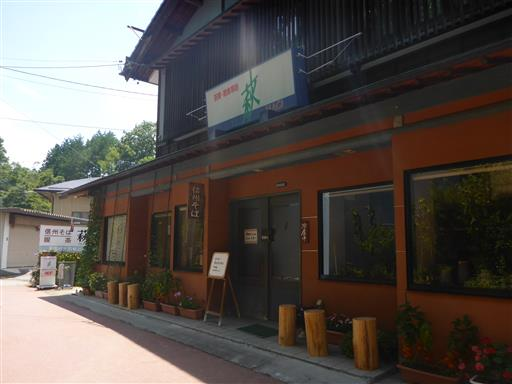
遊歩道を歩き終えたら、場所を移して天竜舟下りを体験する。
天竜峡ではライン下りと舟下りを体験できるが、
ゆったりとしたライン下りに対して、舟下りは急流下りであるのが特徴だ。
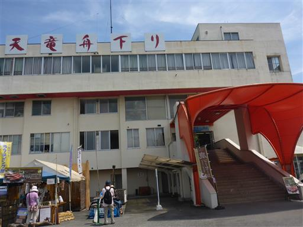
かなり混雑していて、予約時間から30分ほど遅れて乗船する。
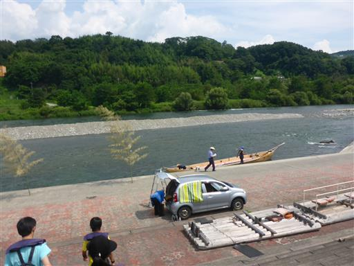
船には向かい合って座る。

手を伸ばせば水につけられる。動き出せばそこそこ涼しい。
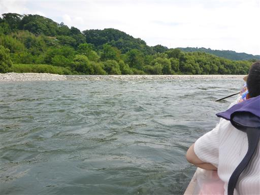
売店でトンビの餌が売られていて、それを投げるとトンビがやってくる。
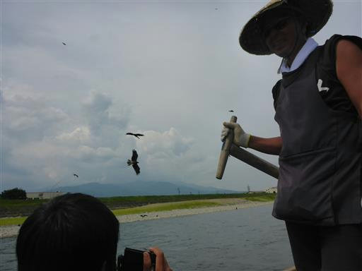
アオサギはじっと立っている。
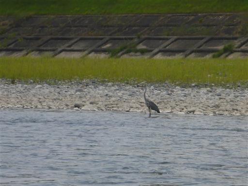
最初は緩やかな流れだったが、所々で急流になる。
飛沫除けのビニールで水を防ぐ。
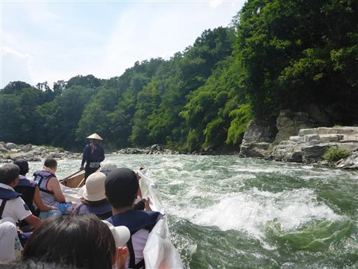
最後はゆっくりと川を下って行く。船頭さんの話ではここ最近雨が降らず水量が少ないとのこと。
水量が少ないと水の流れが遅くなり、スケジュールも遅れがちになるらしい。
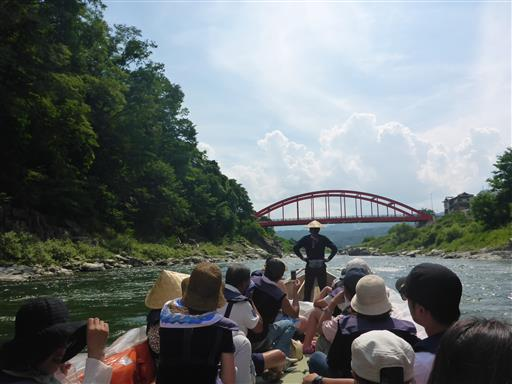
下船。30分ほどの舟下りだった。
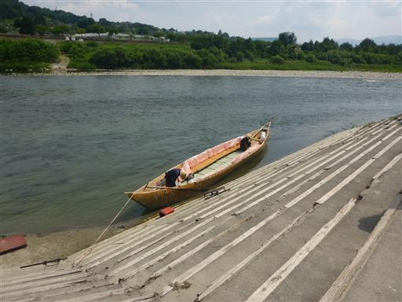
舟下りを終えたら本日の宿泊地・四日市に向かう。
本日はビジネスホテルで宿泊だ。
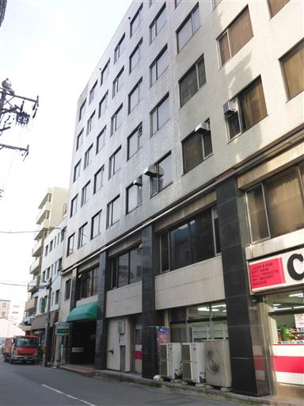
夕飯はイタリアン「プリマステラ」でとる。
パスタのおいしい店だった。
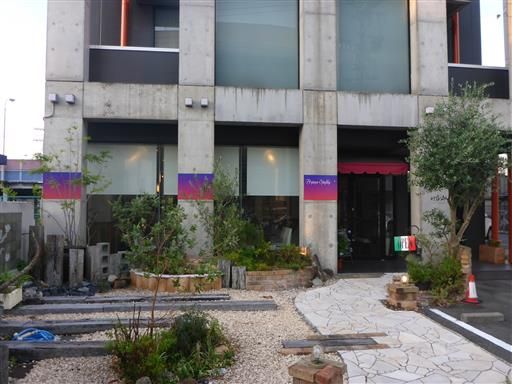
帰りの道中、子供たちは巨大なカニを眺めて喜んでいる。
百貨店で帰省用の手土産を購入しようと考えていたが、8時前なのにすでに閉店していた…
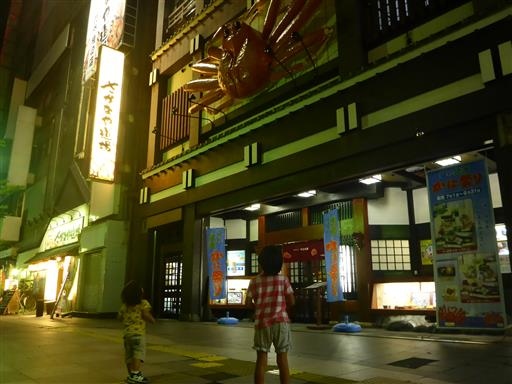